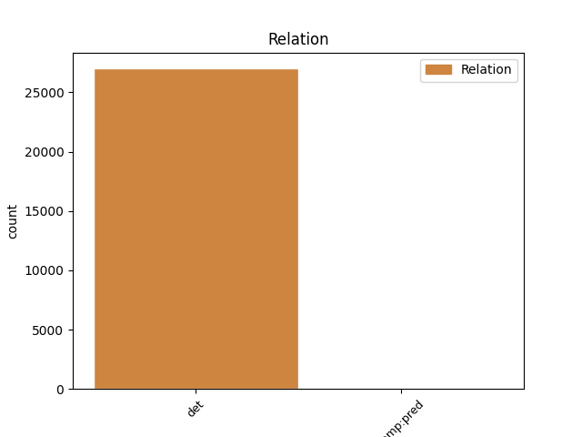
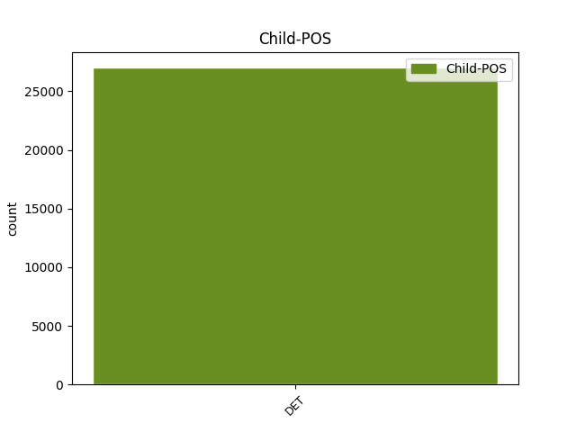

Distribution of features within this leaf



Agreement Rules sorted by frequency.
When the head token is NOUN and the dependent token is DET.
1 Ἡ _ _ _ _ 0 _ _ _
2 χάρις _ _ _ _ 0 _ _ _
3 τοῦ ὁ DET S- Case=Gen|Definite=Def|Gender=Masc|Number=Sing|PronType=Dem 4 det _ ref=REV_22.21
4 κυρίου κύριος NOUN Nb Case=Gen|Gender=Masc|Number=Sing 0 _ _ _
5 Ἰησοῦ _ _ _ _ 0 _ _ _
6 μετὰ _ _ _ _ 0 _ _ _
7 πάντων _ _ _ _ 0 _ _ _
When the head token is ADJ and the dependent token is DET.
1 καὶ _ _ _ _ 0 _ _ _
2 ἐάν _ _ _ _ 0 _ _ _
3 τις _ _ _ _ 0 _ _ _
4 ἀφέλῃ _ _ _ _ 0 _ _ _
5 ἀπὸ _ _ _ _ 0 _ _ _
6 τῶν _ _ _ _ 0 _ _ _
7 λόγων _ _ _ _ 0 _ _ _
8 τοῦ _ _ _ _ 0 _ _ _
9 βιβλίου _ _ _ _ 0 _ _ _
10 τῆς _ _ _ _ 0 _ _ _
11 προφητείας _ _ _ _ 0 _ _ _
12 ταύτης _ _ _ _ 0 _ _ _
13 ἀφελεῖ _ _ _ _ 0 _ _ _
14 ὁ _ _ _ _ 0 _ _ _
15 θεὸς _ _ _ _ 0 _ _ _
16 τὸ _ _ _ _ 0 _ _ _
17 μέρος _ _ _ _ 0 _ _ _
18 αὐτοῦ _ _ _ _ 0 _ _ _
19 ἀπὸ _ _ _ _ 0 _ _ _
20 τοῦ _ _ _ _ 0 _ _ _
21 ξύλου _ _ _ _ 0 _ _ _
22 τῆς _ _ _ _ 0 _ _ _
23 ζωῆς _ _ _ _ 0 _ _ _
24 καὶ _ _ _ _ 0 _ _ _
25 ἐκ _ _ _ _ 0 _ _ _
26 τῆς _ _ _ _ 0 _ _ _
27 πόλεως _ _ _ _ 0 _ _ _
28 τῆς ὁ DET S- Case=Gen|Definite=Def|Gender=Fem|Number=Sing|PronType=Dem 29 det _ ref=REV_22.19
29 ἁγίας ἅγιος ADJ A- Case=Gen|Degree=Pos|Gender=Fem|Number=Sing 0 _ _ _
30 τῶν _ _ _ _ 0 _ _ _
31 γεγραμμένων _ _ _ _ 0 _ _ _
32 ἐν _ _ _ _ 0 _ _ _
33 τῷ _ _ _ _ 0 _ _ _
34 βιβλίῳ _ _ _ _ 0 _ _ _
35 τούτῳ _ _ _ _ 0 _ _ _
When the head token is PROPN and the dependent token is DET.
1 καὶ _ _ _ _ 0 _ _ _
2 ὁ _ _ _ _ 0 _ _ _
3 θάνατος _ _ _ _ 0 _ _ _
4 καὶ _ _ _ _ 0 _ _ _
5 ὁ ὁ DET S- Case=Nom|Definite=Def|Gender=Masc|Number=Sing|PronType=Dem 6 det _ ref=REV_20.14
6 ᾅδης Ἅιδης PROPN Ne Case=Nom|Gender=Masc|Number=Sing 0 _ _ _
7 ἐβλήθησαν _ _ _ _ 0 _ _ _
8 εἰς _ _ _ _ 0 _ _ _
9 τὴν _ _ _ _ 0 _ _ _
10 λίμνην _ _ _ _ 0 _ _ _
11 τοῦ _ _ _ _ 0 _ _ _
12 πυρός _ _ _ _ 0 _ _ _
When the head token is VERB and the dependent token is DET.
1 Λέγει _ _ _ _ 0 _ _ _
2 ὁ ὁ DET S- Case=Nom|Definite=Def|Gender=Masc|Number=Sing|PronType=Dem 3 det _ ref=REV_22.20
3 μαρτυρῶν μαρτυρέω VERB V- Case=Nom|Gender=Masc|Number=Sing|Tense=Pres|VerbForm=Part|Voice=Act 0 _ _ _
4 ταῦτα _ _ _ _ 0 _ _ _
When the head token is PRON and the dependent token is DET.
1 καὶ _ _ _ _ 0 _ _ _
2 ἐδόθη _ _ _ _ 0 _ _ _
3 αὐτοῖς αὐτός PRON Pp Case=Dat|Gender=Masc|Number=Plur|Person=3|PronType=Prs 0 _ _ _
4 ἑκάστῳ ἕκαστος DET Px Case=Dat|Gender=Masc,Neut|Number=Sing 3 det _ ref=REV_6.11
5 στολὴ _ _ _ _ 0 _ _ _
6 λευκή _ _ _ _ 0 _ _ _
7 καὶ _ _ _ _ 0 _ _ _
8 ἐρρέθη _ _ _ _ 0 _ _ _
9 αὐτοῖς _ _ _ _ 0 _ _ _
10 ἵνα _ _ _ _ 0 _ _ _
11 ἀναπαύσωνται _ _ _ _ 0 _ _ _
12 ἔτι _ _ _ _ 0 _ _ _
13 χρόνον _ _ _ _ 0 _ _ _
14 μικρόν _ _ _ _ 0 _ _ _
15 ἕως _ _ _ _ 0 _ _ _
16 πληρώσωσιν _ _ _ _ 0 _ _ _
17 καὶ _ _ _ _ 0 _ _ _
18 οἱ _ _ _ _ 0 _ _ _
19 σύνδουλοι _ _ _ _ 0 _ _ _
20 αὐτῶν _ _ _ _ 0 _ _ _
21 καὶ _ _ _ _ 0 _ _ _
22 οἱ _ _ _ _ 0 _ _ _
23 ἀδελφοὶ _ _ _ _ 0 _ _ _
24 αὐτῶν _ _ _ _ 0 _ _ _
25 οἱ _ _ _ _ 0 _ _ _
26 μέλλοντες _ _ _ _ 0 _ _ _
27 ἀποκτέννεσθαι _ _ _ _ 0 _ _ _
28 ὡς _ _ _ _ 0 _ _ _
29 καὶ _ _ _ _ 0 _ _ _
30 αὐτοί _ _ _ _ 0 _ _ _
When the head token is NUM and the dependent token is DET.
1 καὶ _ _ _ _ 0 _ _ _
2 ἔπεσαν _ _ _ _ 0 _ _ _
3 οἱ _ _ _ _ 0 _ _ _
4 πρεσβύτεροι _ _ _ _ 0 _ _ _
5 οἱ ὁ DET S- Case=Nom|Definite=Def|Gender=Masc|Number=Plur|PronType=Dem 6 det _ ref=REV_19.4
6 εἴκοσι εἴκοσι NUM Ma Case=Nom|Gender=Masc|Number=Plur 0 _ _ _
7 τέσσαρες _ _ _ _ 0 _ _ _
8 καὶ _ _ _ _ 0 _ _ _
9 τὰ _ _ _ _ 0 _ _ _
10 τέσσερα _ _ _ _ 0 _ _ _
11 ζῷα _ _ _ _ 0 _ _ _
12 καὶ _ _ _ _ 0 _ _ _
13 προσεκύνησαν _ _ _ _ 0 _ _ _
14 τῷ _ _ _ _ 0 _ _ _
15 θεῷ _ _ _ _ 0 _ _ _
16 τῷ _ _ _ _ 0 _ _ _
17 καθημένῳ _ _ _ _ 0 _ _ _
18 ἐπὶ _ _ _ _ 0 _ _ _
19 τῷ _ _ _ _ 0 _ _ _
20 θρόνῳ _ _ _ _ 0 _ _ _
21 λέγοντες _ _ _ _ 0 _ _ _
When the head token is DET and the dependent token is DET.
1 πίστει _ _ _ _ 0 _ _ _
2 παρῴκησεν _ _ _ _ 0 _ _ _
3 εἰς _ _ _ _ 0 _ _ _
4 γῆν _ _ _ _ 0 _ _ _
5 τῆς _ _ _ _ 0 _ _ _
6 ἐπαγγελίας _ _ _ _ 0 _ _ _
7 ὡς _ _ _ _ 0 _ _ _
8 ἀλλοτρίαν _ _ _ _ 0 _ _ _
9 ἐν _ _ _ _ 0 _ _ _
10 σκηναῖς _ _ _ _ 0 _ _ _
11 κατοικήσας _ _ _ _ 0 _ _ _
12 μετὰ _ _ _ _ 0 _ _ _
13 Ἰσαὰκ _ _ _ _ 0 _ _ _
14 καὶ _ _ _ _ 0 _ _ _
15 Ἰακὼβ _ _ _ _ 0 _ _ _
16 τῶν _ _ _ _ 0 _ _ _
17 συνκληρονόμων _ _ _ _ 0 _ _ _
18 τῆς _ _ _ _ 0 _ _ _
19 ἐπαγγελίας _ _ _ _ 0 _ _ _
20 τῆς ὁ DET S- Case=Gen|Definite=Def|Gender=Fem|Number=Sing|PronType=Dem 21 det _ ref=HEB_11.9
21 αὐτῆς αὐτός DET Pd Case=Gen|Gender=Fem|Number=Sing 0 _ _ _
When the head token is AUX and the dependent token is DET.
1 δίκαιος _ _ _ _ 0 _ _ _
2 εἶ _ _ _ _ 0 _ _ _
3 ὁ ὁ DET S- Case=Nom|Definite=Def|Gender=Masc|Number=Sing|PronType=Dem 4 det _ ref=REV_16.5
4 ὢν εἰμί AUX V- Case=Nom|Gender=Masc|Number=Sing|Tense=Pres|VerbForm=Part|Voice=Act 0 _ _ _
5 καὶ _ _ _ _ 0 _ _ _
6 ὁ _ _ _ _ 0 _ _ _
7 ἦν _ _ _ _ 0 _ _ _
8 ὁ _ _ _ _ 0 _ _ _
9 ὅσιος _ _ _ _ 0 _ _ _
10 ὅτι _ _ _ _ 0 _ _ _
11 ταῦτα _ _ _ _ 0 _ _ _
12 ἔκρινας _ _ _ _ 0 _ _ _
13 ὅτι _ _ _ _ 0 _ _ _
14 αἵματα _ _ _ _ 0 _ _ _
15 ἁγίων _ _ _ _ 0 _ _ _
16 καὶ _ _ _ _ 0 _ _ _
17 προφητῶν _ _ _ _ 0 _ _ _
18 ἐξέχεαν _ _ _ _ 0 _ _ _
19 καὶ _ _ _ _ 0 _ _ _
20 αἷμα _ _ _ _ 0 _ _ _
21 αὐτοῖς _ _ _ _ 0 _ _ _
22 ἔδωκας _ _ _ _ 0 _ _ _
23 πεῖν _ _ _ _ 0 _ _ _
Disagree Examples:
1 τὸ _ _ _ _ 0 _ _ _
2 δὲ _ _ _ _ 0 _ _ _
3 Ἄργος _ _ _ _ 0 _ _ _
4 τοῦτον _ _ _ _ 0 _ _ _
5 τὸν _ _ _ _ 0 _ _ _
6 χρόνον _ _ _ _ 0 _ _ _
7 προεῖχε _ _ _ _ 0 _ _ _
8 ἅπασι _ _ _ _ 0 _ _ _
9 τῶν ὁ DET S- Case=Gen|Definite=Def|Gender=Fem|Number=Plur|PronType=Dem 15 det _ ref=1.1.2
10 ἐν _ _ _ _ 0 _ _ _
11 τῇ _ _ _ _ 0 _ _ _
12 νῦν _ _ _ _ 0 _ _ _
13 Ἑλλάδι _ _ _ _ 0 _ _ _
14 καλεομένῃ _ _ _ _ 0 _ _ _
15 χωρῇ χώρα NOUN Nb Case=Dat|Gender=Fem|Number=Sing 0 _ _ _
1 δευτέρῃ _ _ _ _ 0 _ _ _
2 δὲ _ _ _ _ 0 _ _ _
3 λέγουσι _ _ _ _ 0 _ _ _
4 γενεῇ _ _ _ _ 0 _ _ _
5 μετὰ _ _ _ _ 0 _ _ _
6 ταῦτα _ _ _ _ 0 _ _ _
7 Ἀλέξανδρον _ _ _ _ 0 _ _ _
8 τὸν ὁ DET S- Case=Acc|Definite=Def|Gender=Masc|Number=Sing|PronType=Dem 9 det _ ref=1.3.1
9 Πριάμου Πρίαμος PROPN Ne Case=Gen|Gender=Masc|Number=Sing 0 _ _ _
10 ἀκηκοότα _ _ _ _ 0 _ _ _
11 ταῦτα _ _ _ _ 0 _ _ _
12 ἐθελῆσαί _ _ _ _ 0 _ _ _
13 οἱ _ _ _ _ 0 _ _ _
14 ἐκ _ _ _ _ 0 _ _ _
15 τῆς _ _ _ _ 0 _ _ _
16 Ἑλλάδος _ _ _ _ 0 _ _ _
17 δι’ _ _ _ _ 0 _ _ _
18 ἁρπαγῆς _ _ _ _ 0 _ _ _
19 γενέσθαι _ _ _ _ 0 _ _ _
20 γυναῖκα _ _ _ _ 0 _ _ _
21 ἐπιστάμενον _ _ _ _ 0 _ _ _
22 πάντως _ _ _ _ 0 _ _ _
23 ὅτι _ _ _ _ 0 _ _ _
24 οὐ _ _ _ _ 0 _ _ _
25 δώσει _ _ _ _ 0 _ _ _
26 δίκας _ _ _ _ 0 _ _ _
1 μέχρι _ _ _ _ 0 _ _ _
2 μὲν _ _ _ _ 0 _ _ _
3 ὤν _ _ _ _ 0 _ _ _
4 τούτου _ _ _ _ 0 _ _ _
5 ἁρπαγάς _ _ _ _ 0 _ _ _
6 μούνας _ _ _ _ 0 _ _ _
7 εἶναι _ _ _ _ 0 _ _ _
8 παρ’ _ _ _ _ 0 _ _ _
9 ἀλλήλων _ _ _ _ 0 _ _ _
10 τὸ ὁ DET S- Case=Acc|Definite=Def|Gender=Neut|Number=Sing|PronType=Dem 13 det _ ref=1.4.1
11 δὲ _ _ _ _ 0 _ _ _
12 ἀπὸ _ _ _ _ 0 _ _ _
13 τούτου οὗτος ADJ Pd Case=Gen|Gender=Neut|Number=Sing 0 _ _ _
14 Ἕλληνας _ _ _ _ 0 _ _ _
15 δὴ _ _ _ _ 0 _ _ _
16 μεγάλως _ _ _ _ 0 _ _ _
17 αἰτίους _ _ _ _ 0 _ _ _
18 γενέσθαι _ _ _ _ 0 _ _ _
1 ἀπὸ _ _ _ _ 0 _ _ _
2 τούτου _ _ _ _ 0 _ _ _
3 αἰεὶ _ _ _ _ 0 _ _ _
4 ἡγήσασθαι _ _ _ _ 0 _ _ _
5 τὸ ὁ DET S- Case=Acc|Definite=Def|Gender=Neut|Number=Sing|PronType=Dem 6 det _ ref=1.4.4
6 Ἑλληνικὸν Ἑλληνικός ADJ A- Case=Nom|Degree=Pos|Gender=Neut|Number=Sing 0 _ _ _
7 σφίσι _ _ _ _ 0 _ _ _
8 εἶναι _ _ _ _ 0 _ _ _
9 πολέμιον _ _ _ _ 0 _ _ _
1 τὴν _ _ _ _ 0 _ _ _
2 δὲ _ _ _ _ 0 _ _ _
3 Εὐρώπην _ _ _ _ 0 _ _ _
4 καὶ _ _ _ _ 0 _ _ _
5 τὸ ὁ DET S- Case=Acc|Definite=Def|Gender=Neut|Number=Sing|PronType=Dem 6 det _ ref=1.4.4
6 Ἑλληνικόν Ἑλληνικός ADJ A- Case=Nom|Degree=Pos|Gender=Neut|Number=Sing 0 _ _ _
7 ἥγηνται _ _ _ _ 0 _ _ _
8 κεχωρίσθαι _ _ _ _ 0 _ _ _